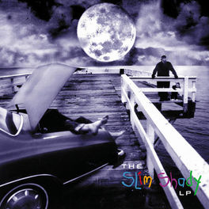
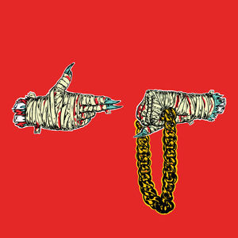

EFFERVESCENT VISCERA
a playlist of this finest filth.
- Jungle - Busy Earnin' - Jungle - XL Recordings - 2014

- UGK - Int'l Player's Anthem - Underground Kingz - Jive Records - 2007

- Big Sean - Paradise (Extended) - Dark Sky Paradise - Def Jam Records - 2015
 /
/
- Eminem - Role Model - The Slim Shady LP - Def Jam Records - 1999

- Run The Jewels - Blockbuster Night, Pt. 1 - RTJ2 - Def Jam Records - 2014

- Primus - Wynona's Big Brown Beaver - Tales From The Punchbowl - Interscope - 1995
- Green Jelly - Three Little Pigs - Cereal Killer Soundtrack - Zoo Entertainment - 1993

- GG Allin - Carmelita - Carnival Of Excess - Rockside Media - 1996

- GWAR - Bring Back The Bomb - War Party - DRT Entertainment - 2004
- "Weird" Al Yankovic - Frank's 2000" TV - Alapalooza - Scotti Brothers - 1993

Back To The Top!